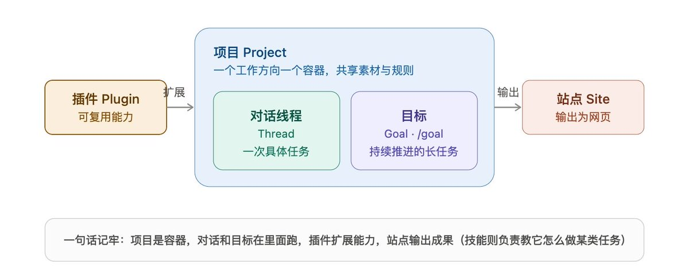
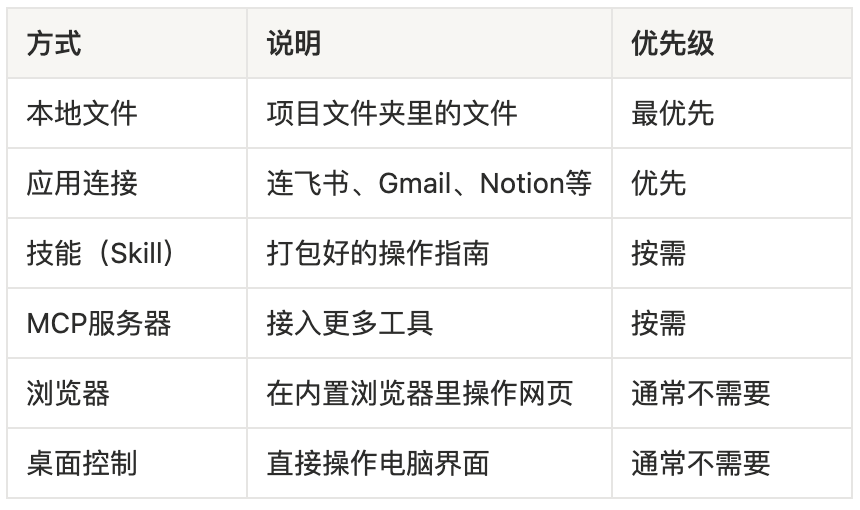
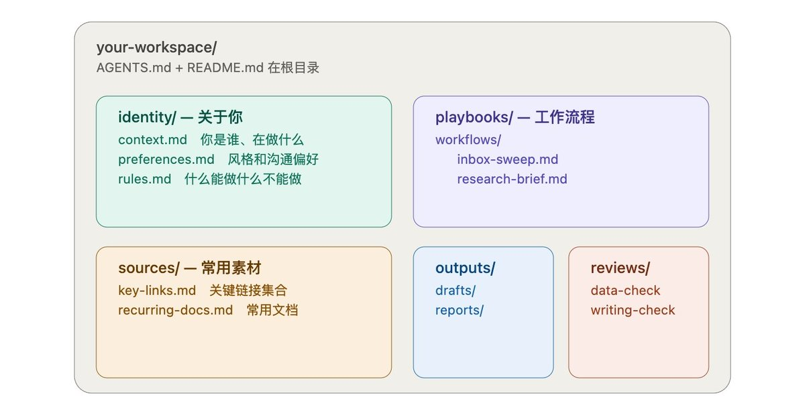
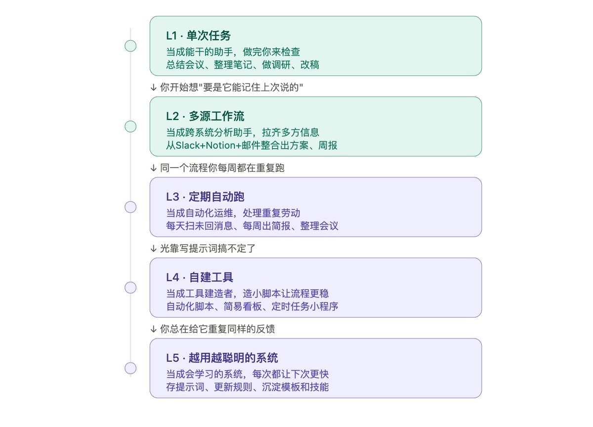
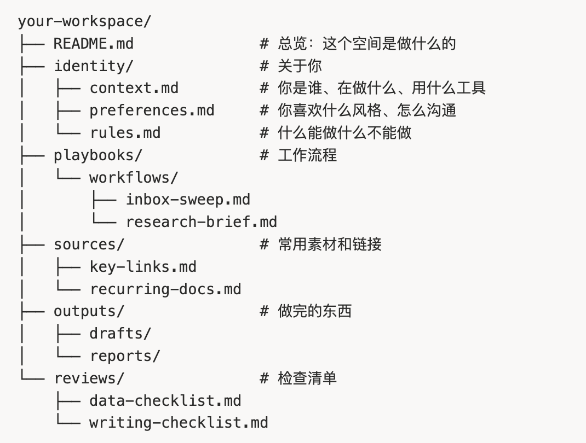

CODEX FOR KNOWLEDGE WORK
Codex 只会
写代码？
这个判断错了。
它更像一个办公工作台
找资料调工具跑流程交付成果
FIVE CORE CONCEPTS
先懂 5 个概念

项目是容器，对话和目标在里面跑
ProjectThreadGoalPluginSite
TASK FIT
什么任务最适合？

优先使用本地文件与直接应用连接
THE WORK LOOP
五步工作循环
连接工具 → 写入上下文
执行 → 审核 → 沉淀复用
BUILD THE WORKSPACE
搭一个
AI 工作空间

稳定上下文，不要只依赖聊天记录
context.md · 你是谁preferences.md · 偏好rules.md · 红线
FIVE LEVELS
别急着全自动

从单次任务，逐步升级到持续学习系统
DELEGATE OR COLLABORATE?
委派，还是协作？

把规则、流程、来源和检查清单写进文件
START SMALL
从一个真实任务
开始
低风险 · 可检查
↓
做好一次 · 保存做法
↓
把重复任务变成流程
AI 不替你承担责任
把注意力留给判断与策略
来源：Gorden Sun @Gorden_Sun · X Article
Codex 不只是写代码，它是能调用工具并交付成果的办公工作台
多来源、可重复、能检查、有产出的任务最适合 Codex
连接工具、写上下文、执行、审核、沉淀，形成复利循环
把角色、偏好与红线写进工作空间，不要只依赖聊天记录
从单次任务逐步升级到多来源、自动化、自建工具与学习系统